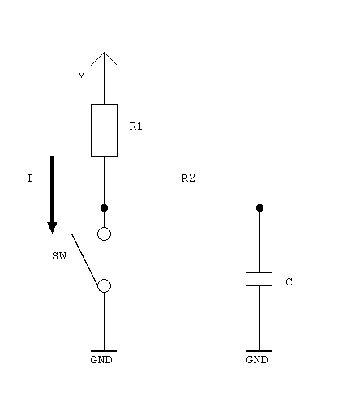
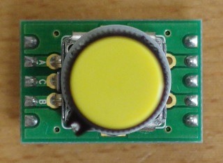
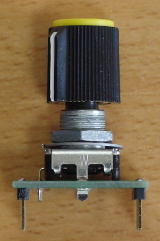
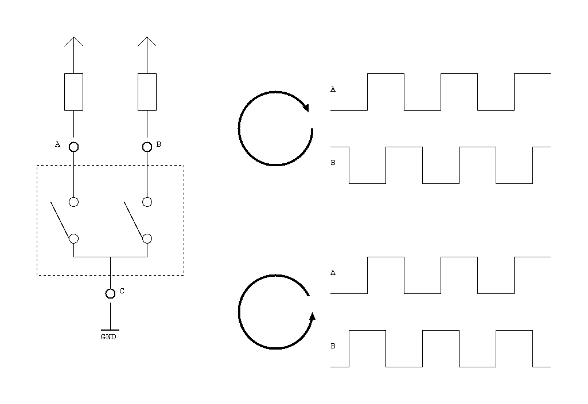
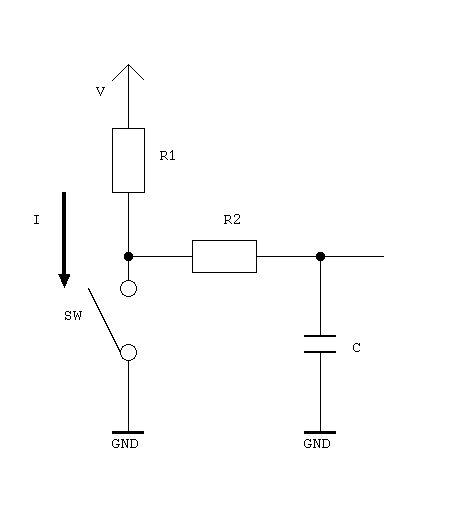

Debouncer

τ ≈ C × (R1 + R2)
I ≈ V / R1 (resistive)
V = 3.3 V, R1 = 6.2 kΩ, R2 = 15 kΩ, C = 0.01 μF
τ ≈ 0.01 μF × (6.2 kΩ + 15 kΩ) = 0.2 msec
I ≈ 3.3 V / 6.2 kΩ = 0.5 mA
The EC12E2420801 is a 24-step rotary encoder with detent.




τ ≈ C × (R1 + R2)
I ≈ V / R1 (resistive)
V = 3.3 V, R1 = 6.2 kΩ, R2 = 15 kΩ, C = 0.01 μF
τ ≈ 0.01 μF × (6.2 kΩ + 15 kΩ) = 0.2 msec
I ≈ 3.3 V / 6.2 kΩ = 0.5 mA